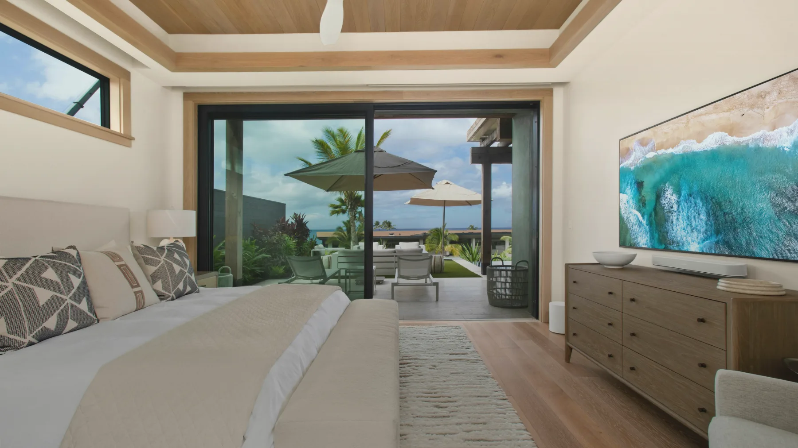

Care at your location
After surgery, movement should be reserved entirely for healing. Your nurse comes to you — at home or at your hotel, anywhere in Southern California.
Southern California aftercare
Concierge post-surgical aftercare delivered by licensed nurses — to your home, your hotel, or wherever your recovery takes you across Orange County, Los Angeles, and San Diego.

About
Divine AfterCare is a private care coordination company specializing in post-surgical aftercare for people who recognize that results are shaped as much by the recovery as by the procedure itself.
We coordinate care wherever you are — at home, at your hotel, anywhere in Southern California — connecting you with independently licensed nurses who bring expert post-surgical care with the elegance, discretion, and personal attention you deserve. Every visit is tailored, every detail considered, every client treated as the priority.
This is recovery, elevated.
Our clients’ world
Services
In-home aftercare
One-on-one nursing tailored to your procedure — medication administration, wound and drain care, mobility assistance, and continuous monitoring, all in your own space.
Learn moreHotel & away aftercare
Traveling for surgery shouldn't mean compromising your recovery. We bring the same nursing care to your hotel, recovery suite, or short-term residence.
Learn morePersonalized care plans
Every procedure is different and so is every patient. We build your plan around your surgery, your timeline, your household, and your surgeon's instructions.
Learn moreRecovery packages
From a focused four-hour visit right after your procedure to round-the-clock overnight coverage, every package is priced transparently and can be tailored to your recovery.
The Divine difference
After surgery, movement should be reserved entirely for healing. Your nurse comes to you — at home or at your hotel, anywhere in Southern California.
We stay in close contact with your surgeon and their team throughout recovery, so every post-operative instruction is observed and nothing falls between the cracks.
You are not a case number or a care protocol. Every shift is built around you — your needs, your procedure, your recovery — with undivided attention start to finish.
What you are going through is deeply personal. Your care, your story, and the details of your recovery stay entirely confidential. Always.
Recovery doesn't conform to a calendar. Care comes in 4, 6, 8, 12, and 24-hour increments, adapted to your procedure and your evolving needs.
Nothing for you to arrange. Your nurse arrives with wound care supplies, vital monitoring equipment, and everything else the shift requires.
Scope of care
From the moment your procedure ends to the day you feel fully yourself again, we manage every clinical and personal detail — so your only responsibility is to rest and heal.
Unwind · Restore · Recover
Reach out today and we will handle every detail — from your first night home to your final follow-up appointment.
Testimonials
The nursing care I received was exceptional. My nurse was attentive, compassionate, and made my recovery feel much less overwhelming.
I felt supported every step of the way. The nurse answered all my questions and helped me feel comfortable during recovery.
Professional, knowledgeable, and reliable. The aftercare gave me confidence that I was healing properly.
Outstanding care and attention to detail. My nurse was patient, reassuring, and always available when I needed assistance.
The level of care exceeded my expectations. Recovery was much smoother thanks to the guidance and support I received.
Friendly and attentive from start to finish. The nursing team made me feel safe, comfortable, and well cared for throughout my recovery.
Questions & answers
Still have a question? We answer every inquiry personally.
All packages carry a four-hour minimum and include medication monitoring, wound care, dressing changes, vital sign monitoring, compression garment assistance, bathing and grooming assistance, meal preparation, and direct communication with your surgical team. Every plan can be further tailored to your specific procedure and recovery requirements.
Yes. Every member of the Divine AfterCare nursing team is fully licensed and has completed a thorough background screening before joining our practice.
Reach out as soon as your surgery date is confirmed. Availability fills quickly, and booking early ensures we are with you from the very first day of your recovery.
Yes. We work in close collaboration with your surgical team so all post-operative instructions are followed and any concerns arising during recovery are communicated promptly.
Personalized post-surgical recovery and compassionate elderly companion care. For seniors we provide assistance with daily activities, companionship, mobility support, medication reminders, and overall wellness — whether you are recovering from surgery yourself or arranging trusted care for a loved one.
A wide range, including body contouring, breast augmentation and revision, rhinoplasty, facelifts, liposuction, tummy tucks, and orthopedic surgeries. Whether your procedure was elective, reconstructive, or medically necessary, we are here to support your recovery.
Absolutely. Anything you share — medical history, surgical details, personal contact information — is kept strictly confidential, used solely to coordinate your care, and never sold or shared with third parties without your explicit consent. All client information is handled in accordance with applicable California privacy laws.
Cancellations must be made a minimum of 48 hours in advance.
Get in touch
Your comfort and discretion come first, even in how you reach us. Connect by phone, email, or our confidential inquiry form and we will respond personally.
Not sure if we serve your area?
Divine AfterCare provides private, concierge post-surgical aftercare throughout Orange County, with extended coverage across Los Angeles and San Diego. Wherever your recovery takes you, we are there.